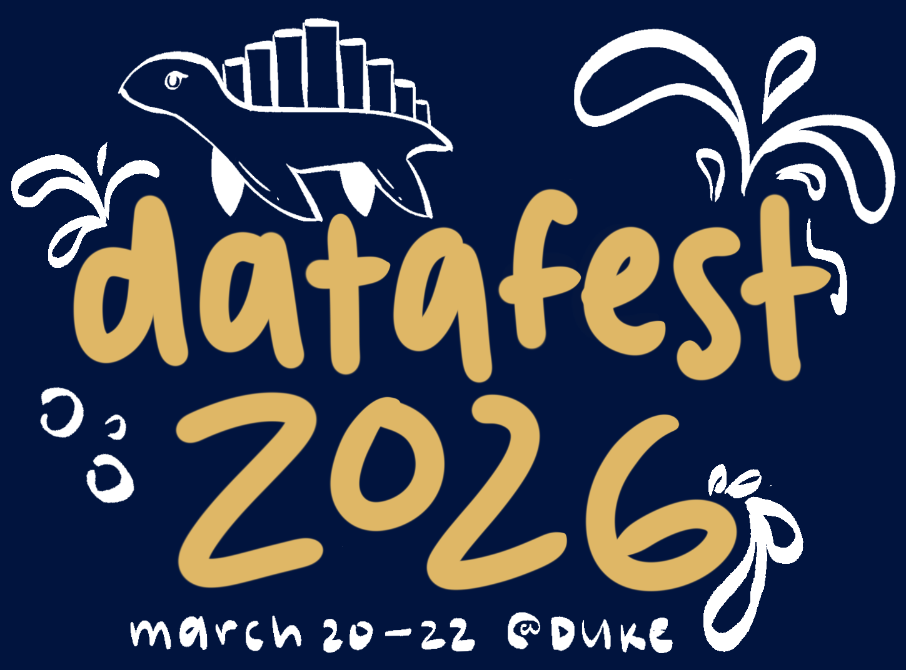
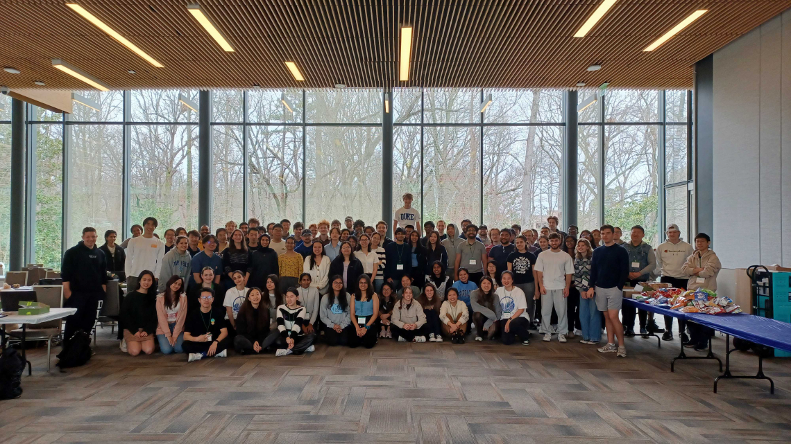

Event details

When: Friday, March 20 at 5:00pm - Sunday, March 22 at 5:00pm
Where: Perkins Library, Duke University
DataFest begins with a Friday welcome where you’ll be introduced to a surprise, real-world dataset and the organization behind it. Over the weekend, teams will explore the data, develop a research question, and conduct their own analysis.
Projects are due Sunday afternoon. Teams will present their findings to a panel of faculty and industry judges, with prizes awarded for categories such as best visualization, best use of external data, and best overall insights.
What is DataFest?
ASA DataFestTM is a data analysis competition where teams of up to five students attack a large, complex, and surprise data set over a weekend. Your job is to represent your school by finding and communicating insights into these data. The teams that impress the judges will win prizes as well as glory for their school. Everyone will have a great experience, lots of food, and fun!
ASA DataFestTM is also a great opportunity to gain experience that employers are looking for. Having worked on a data analysis problem at this scale will certainly help make you a good candidate for any position that involves analysis and critical thinking, and it will provide a concrete example to demonstrate your experience during interviews.
ASA DataFestTM at Duke is organized by the Department of Statistical Science and the Statistical Science Majors Union (SSMU) at Duke University.
Sign Up
Participants
Registration to participate in DataFest 2026 @ Duke is not yet open. Please check back soon!
Consultants
Check back soon!
Questions
If you would like to update your registration status, or have any questions about your registration, please send an email to Dr. Alexander Fisher.
FAQ
How do I sign up?
Registration will open for DataFest 2026 in late January.
What do I bring to DataFest?
Please bring a laptop, charger and refillable water bottle.
Is there a registration fee?
No, there is no registration fee. However note that the event takes significant resources to run. So, if you sign up, we expect that you will show up! If your plans change, let us know as soon as possible so we can make your spot available to someone else.
Who is eligible to compete?
All undergraduate students are eligible.
What about graduate students?
We would love to have Master’s and Ph.D. students be involved as consultants during the event.
How large are the teams?
Teams can be made up of 2-5 students.
Do I have to compete in a team?
Yes, but if you don’t have a team in mind, select the “Looking for team” registration under the sign ups page and we’ll match you with others looking for teammates.
What do I need to compete?
All you need is a laptop with tools for data analysis (there is no limitation on which software you use) and enthusiasm for data.
What are the rules of the competition?
- All projects must be submitted by Sunday, March 22. There is only one submission per team.
- Any additional data used in the project must be publicly available or openly licensed.
- All interactive dashboards must be deployed online.
- All slide decks and write ups must be submitted as a PDF document.
- It’s a competition, but a friendly one, so collaboration between teams is not only allowed but highly encouraged.
How do I submit my analysis?
Once the registration window closes, participants will receive an email with a link to the project submission form.
Where can I get help during the competition?
Consultants will be available in-person throughout the weekend to answer questions.
What can I win?
ASA student memberships, medals, mugs, fame, glory, or some combination thereof… And you get a t-shirt!
Where else is ASA DataFest™ happening?
ASA DataFest™ is growing fast! See this list of participating institutions. If you are interested in hosting DataFest at your institution, see hosting information.